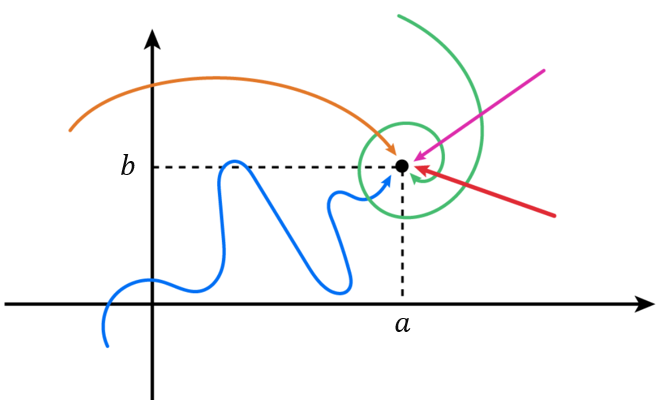

Lesson 17: Limits and Continuity of Functions of Several Variables
An Example
Consider the function below.
Investigate the following limit numerically and algebraically.
Numerically: evaluate the function at points closer and closer to (3, 2).
| \(x\) | \(y\) | \(f(x, y)\) |
|---|---|---|
| 3 | 2 | Undefined |
| 3.1 | 2.1 | 1.322580645 |
| 3.01 | 2.01 | 1.332225914 |
| 3 | 2.0001 | 1.333366667 |
| 2.9999 | 1.999 | 1.333044435 |
Algebraically: factor, and cancel the common factor.
Discussion: We encounter division by zero when evaluating \(f(x, y)\) at \(x = 3\) and \(y = 2\). But for inputs \((x, y)\) very close to and approaching \((3, 2)\), the function outputs converge to \(1.\overline{3}\). Notice there are many ways for \((x, y)\) to approach \((3, 2)\), all converging to \(1.\overline{3}\). This will be essential very soon.
An Example
Investigate the following limit numerically and algebraically.
Numerically:
| \(x\) | \(y\) | \(f(x, y)\) |
|---|---|---|
| 0 | 0 | Undefined |
| 0.1 | 0 | Undefined |
| 0.01 | 0.01 | 0.249998438 |
| 0.0001 | 0.01 | 0.249999984 |
| −0.0001 | −0.0001 | 0.249999976 |
Algebraically: multiply by the conjugate of the numerator.
Discussion: The function is undefined whenever \(x = 0\) or \(y = 0\). Otherwise, for inputs \((x, y)\) approaching \((0, 0)\), the function outputs converge to \(0.25\). Notice again there are many ways for \((x, y)\) to approach \((0, 0)\). This will be essential very soon.
In Calculus I, we study functions of one real variable, \(f(x)\). We learn two ways for \(x\) to approach a number \(a\): the left-hand and right-hand limits, \(\displaystyle\lim_{x \to a^-} f(x)\) and \(\displaystyle\lim_{x \to a^+} f(x)\).
The limit below exists only when these two limits agree.
Now we study functions of two real variables, \(f(x, y)\). In this case there are infinitely many ways for the ordered pair \((x, y)\) to approach \((a, b)\). This is illustrated below.

The limit below exists only if the limits along all of these paths exist and agree.
An Example
Consider the limit below.
- Investigate this limit as \((x, y)\) approaches \((0, 0)\) along \(y = x\).
- Investigate this limit as \((x, y)\) approaches \((0, 0)\) along \(y = x^2\).
- Explain why the limit does not exist.
Part (a): substitute \(y = x\).
| \(x\) | \(y = x\) | \(f(x, y)\) |
|---|---|---|
| 0 | 0 | Undefined |
| 0.1 | 0.1 | 0.5 |
| 0.01 | 0.01 | 0.5 |
| 0.0001 | 0.0001 | 0.5 |
Part (b): substitute \(y = x^2\).
| \(x\) | \(y = x^2\) | \(f(x, y)\) |
|---|---|---|
| 0 | 0 | Undefined |
| 0.02 | 0.0004 | 0.019992003 |
| 0.01 | 0.0001 | 0.009999000 |
| 0.001 | 0.000001 | 0.000999999 |
Part (c): The limit does not exist, because the limits along the two paths in parts (a) and (b) are different. For the limit to exist as \((x, y)\) approaches \((0, 0)\), the limits along all paths must agree.
Consider a real-valued function of two variables, \(f(x, y)\). This function is continuous at the point \((a, b)\) if the function is defined at the point, the limit exists at the point, and the function value and the limit agree at the point.
Continuity at a Point
An Example
Determine where the below function is continuous.
The function is undefined where the denominator \(xy\) is zero. It is continuous everywhere except where \(x = 0\) or \(y = 0\), that is, everywhere except on the \(x\)-axis and the \(y\)-axis.
Another Example
Determine where the below function is continuous.
Since \(1 + x^2 + y^2 \ge 1\), the logarithm is always defined, and it equals zero only when \(1 + x^2 + y^2 = 1\), at the point \((0, 0)\). The function is continuous everywhere except at the point \((0, 0)\).
Another Example
Determine where the below function is continuous.
The product \(xy\) and the sine function are continuous everywhere, so their composition is too. The function is continuous everywhere.